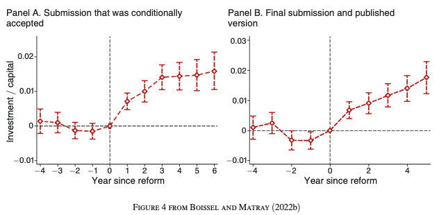
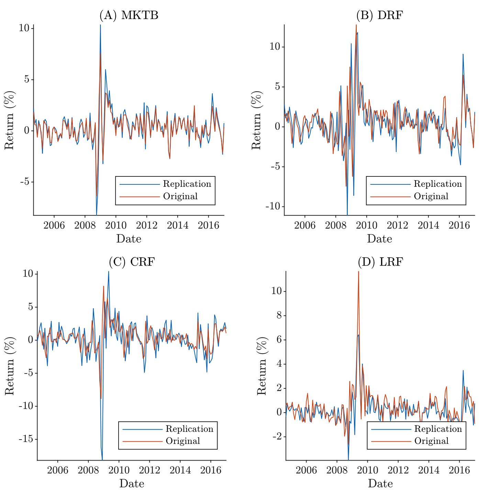

Lecture 2:
Replication Issues in Empirical Research
PhD course in Empirical Asset Pricing
Rotman | www.charlesmartineau.com
Key Issues in Asset Pricing Research
Data Mining and p-Hacking:
Researchers often test numerous hypotheses or models until they find statistically significant results, a practice known as p-hacking. This increases the likelihood of false positives. In asset pricing, this can manifest as testing hundreds of factors or combinations of factors until a seemingly significant anomaly is found.
Overfitting:
Models may be overly tailored to historical data, capturing noise rather than genuine economic relationships. This reduces their predictive power out of sample. For example, a factor that appears to explain cross-sectional returns in one sample may fail to do so in another.
Publication Bias:
Journals tend to publish studies with significant or novel results, while null or replication studies are often overlooked. This skews the literature toward findings that may not be robust.
Key Issues in Asset Pricing Research
Lack of Out-of-Sample Testing:
Many studies do not validate their findings on out-of-sample data, making it difficult to assess whether the results are generalizable or specific to a particular dataset.
Factor Proliferation:
The number of proposed factors in asset pricing has exploded, with hundreds of factors now documented in the literature. Many of these factors may be redundant, spurious, or driven by data snooping.
Replication Failures:
Studies attempting to replicate well-known asset pricing anomalies or factors often fail to reproduce the original results, raising questions about their validity.
Data Mining and p-Hacking
… and the Cross-Section of Expected Returns (Harvey, Liu, and Zhu, 2016)
(harvey2016?) argue that “. . . most claimed research findings in financial economics are likely false.”
Why? Because of Multiple Hypothesis Testing (MHT) and p-hacking.
MHT refers to the statistical challenge that arises when a researcher conducts multiple statistical tests within the same study or dataset. The core issue with multiple testing is that it increases the likelihood of making one or more Type I errors (false positives).
Harvey, Liu, and Zhu (2016)

Harvey, Liu, and Zhu (2016)

Chordia, Goyal, and Sarreto (2020)
(chordia2020?) argue that the suggested threshold t-stat of 3 is too low and should be 3.8 and 3.4 for time-series and cross-sectional regressions, respectively
- They argue for another statistical method to correct for multiple testing that takes into account financial data exhibit serial and cross-sectional dependence.
Overfitting
(la1996?) and (so2013?) find that strategies that bet against analysts’ long-term growth expectations and estimated biases are profitable. Neither strategy, however, has earned a reliable alpha since 2000. These results could be interpreted as implying that analysts’ biases might have correlated with (or even contributed to) mispricings but that markets have since turned more efficient.
(van2023?) trains a random-forest regression to serve as “a statistically optimal unbiased machine-learning benchmark.” The difference between analysts’ forecasts and this benchmark measures how overly optimistic or pessimistic analysts are in their forecasts.
- A strategy that buys (sells) stocks that receive too pessimistic (optimistic) earnings forecasts earns a monthly value-weighted Fama-French five-factor model alpha of 1.54% (t-value = 5.84)
- The ML method is a random forest one or two years of data at a time with 75 predictors such as macro fundamental, financial ratios, historical EPS.
- Bias^h_{i,t} = \frac{AF^h_{i,t}-RF^h_{i,t}}{Price_{i,t-1}}, sort in quantiles monthly.
(zhang2024?) spotted an issue:
- A model such as random forest requires more data to avoid overfitting to the training data and to make accurate predictions in the test data.
- One of the key 75 variable is the “realized earnings from the last period” … What is the issue with this variable?
Findings from (zhang2024?):

Findings from (zhang2024?):
Sharpe ratios of 148 anomaly portfolios. This figure plots the distribution of annualized Sharpe ratios of 148 anomalies from Chen and Zimmermann’s (2022) database.

Stock return predictability
- Firm characteristics can predict the XS dispersion in stock returns, e.g., Fama-French factors
- Time-series predictability of the aggregate market excess return based on economic and financial variables
Can one use the explanatory variables in (1) to forecast in (2)?
(dong2022?)
(dong2022?) selects 100 long-short anomaly portfolio returns that are representative of anomalies from the XS literature (accruals, firm age, illiquidity, momentum, bm).
- Predict market returns for each anomaly separately (using OLS and ML) and then combine the predictor like in Rapach et al. (2009).

(cakici2024?)
Do Anomalies really predict market returns?
- (dong2022?) show that anomalies predict market returns, but (engelberg2023?) say that aggregated XS predictors do not forecast market returns.
- Why do Dong et al. find predictability while (engelberg2023?) do not? In (cakici2024?) (2024), the authors show while some evidence may be spotted in individual markets—such as the USA—it originates from a handful of specific anomalies and depends heavily on seemingly unimportant methodological choices.
- Alternative anomaly sets: The authors revisit (dong2022?) : the US stock market from 1970 to 2017. Besides the anomalies from (dong2022?) , they add other most well-known anomaly sets from the asset pricing literature: 153 tercile and decile portfolios based on data from Jensen, Kelly, and Pedersen (2023), 207 anomalies from Chen and Zimmermann (2022), and 188 factors from Hou, Xue, and Zhang (2020). Among all the tested samples, the return predictability holds only for one in four: the original sample of Dong et al. (2022).
Replication failures
(hou2020?) attempt to measure the robustness of past asset pricing anomalies.
Study design:
- Controlling for micro-caps (removing their impacts). Bottom 20% of NYSE stocks by market cap.
- Looking for high certainty (high t-statistics > 3)
Conclude that most anomalies are not replicable empirically, and those that are successfully replicated are so with magnitudes that are often lower. Markets are more efficient than previously thought.
(hou2020?)
Emphasis on the impact of controlling for micro-cap stocks:
- Account for 3% of stock market value yet 60% of stocks.
- Using equal-weighted returns overweight their impact.
- In practice, the high costs of trading micro-caps can explain why anomalies deemed significant exist.
- Most practical implementations of researched investing strategy will not prioritize micro-caps in their design!
- While the influence of micro-caps is overwhelming in asset pricing studies, it is almost nonexistent in actual money management.
Chen and Zimmerman (2022)

How robust is to microcaps?

Some hope? (chen2021?)
For (chen2021?), past replication studies measure predictability deviating from the methods employed in original research.
If the method is different, for sure the results will be different!
Important Replication must be undertaken with the exact same conditions as in the original study. The methodology must be followed precisely and assumptions be extremely limited.
See codes at Open Asset Pricing.
Reproducibility in Management Science
(fivsar2024?) assess the reproducibility of nearly 500 articles published in MS before and after the introduction of a new Data and Code Disclosure policy in 2019.
- More than 95% of articles under the new disclosure policy could be fully or largely computationally reproduced.
- For 29% of articles, the data is not accessible.
- Considering all articles in the sample reduces the share of reproduced articles to 68%.
- Other reasons for unsuccessful reproduction include missing code, code errors, code complexity.
My report on the replication of Hasler and Martineau (2022)
Non-Standard Errors
The FINCAP project by (bogoev2024?) is the first crowd-sourced empirical paper in Economics/Finance. The project seeks to expose the variation across researchers for results they report independently testing the same hypotheses on the same sample. 343 authors from 34 countries answered the same asset pricing questions:
- How large are non-standard errors in financial economics?
- Can NSE be ” in the cross-section of researchers?
- Does peer feedback reduce non-standard errors?
- Are researchers accurately aware of the size of NSE?
Non-Standard Errors

Publication pressure…
(matray2023?) published a paper in AER, but someone noticed a difference in a key figure between submitted version that was conditionally accepted and the final version.
(matray2023?)
First, the firm size control variable in the conditionally accepted manuscript was coded in changes but was incorrectly written in the baseline specification as levels. This error was caught in the replication process when the data were rebuilt from scratch, and the variable was redescribed accordingly in the paper.
Second, the code that plots Figure 4 in the publicly available code repository includes an alteration of two coefficients by a factor of 1.8, which was incorrect. This alteration affects the rendering of the figure.
Cross-sectional of bond returns
(bai2016?) find that the cross-sectional of bond returns is predictable by a set of macroeconomic variables. They find that the downside (DRF), credit (CRF), and liquidity (LRF) risk factors are not spanned by existing factors (including MKTB as well as the bond factors of Fama and French, 1993).
(dickerson2023?) revisit these results and provide evidence that common factor pricing in corporate bonds is exceedingly difficult to establish and demonstrate that previously proposed bond risk factors do not provide any incremental pricing information to the corporate bond market factor.
(dickerson2023?)
For any work related on how to compute bond returns, see Open Source Bond Asset Pricing.
More than 10,000 retracted articles in one year
See this link.
The cost of poor code oversight…
And another case.
–
References

MGFD40